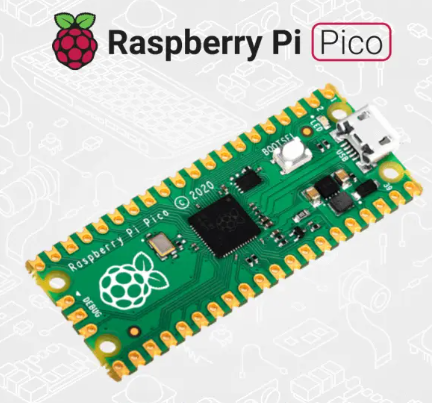

Course Progress
2 of 8 sections completed
25%
Chapter overview and objectives
RP2040 (Pico / Pico W) or RP2350 (Pico 2 / Pico 2 W). Micro USB, BOOTSEL button, GPIO pins GP0–GP28, power pins (3V3, VBUS, VSYS), and debug pads.
Pins are labeled on the underside. GPIO pins are named GP0–GP28. Important power & control pins include: 3V3, VBUS, VSYS, GND, and RUN. Note: numbering starts at 0.
Pico boards ship flat so they can be soldered directly onto other PCBs (lower profile for embedded systems). For prototyping with breadboards, solder 2.54 mm male pin headers.
Raspberry Pi Pico is a microcontroller development board designed for physical computing and embedded control tasks. It runs bare-metal firmware (no operating system) and boots extremely quickly with low power consumption.
Unlike a Raspberry Pi computer (which runs Linux and supports desktop peripherals), the Pico runs a single program and is optimized for sensors, LEDs, motors, and other embedded tasks.

Tools: Soldering iron + stand, lead-free solder, sponge/cleaner, two 20-pin 2.54 mm male headers, breadboard or Blu Tack.
Hold BOOTSEL while plugging the Pico into USB. When the Pico drive appears, drag the appropriate .uf2 MicroPython file onto the drive. The Pico will reboot when flashing is done.
Open Thonny or your chosen REPL and connect to the Pico. Confirm the MicroPython prompt appears and try a simple REPL command (e.g., print('hello')).
Interactive REPL for experiments; script mode for saved programs; Stop in Thonny to interrupt running code.
~30–45 minutes depending on practice time.
MicroPython is a lightweight, Python-compatible language designed to run directly on the RP2040/RP2350 microcontroller with hardware-specific libraries and reduced memory footprint.
REPL (Shell) — executes immediately:
print("Hello, World!")Script mode — save and run on the Pico:
# hello.py
print("Hello, World!")Save this as hello.py on the Raspberry Pi Pico and click Run in Thonny.
for i in range(10):
print("Loop number", i)
import time
print("Loop starting!")
while True:
print("Loop running!")
time.sleep(1)
Tip: Use the Stop button in Thonny to interrupt an infinite loop.
Type the following in the Shell and press Enter:
print("Hello, World!")Write this in the Script Area, save to the Pico (e.g., hello.py), then click Run:
print("Hello, World!")user_name = input("What is your name? ")
print("Hello", user_name)
Input comes from the Shell and is stored as a string.
if user_name == "Clark Kent":
print("You are Superman!")
else:
print("You are not Superman!")
Remember: = assignment vs == comparison. Comparison operators: ==, !=, <, >, <=, >=.
Physical computing uses code to sense and control the real world via hardware. The Pico bridges software logic (MicroPython) and devices like LEDs, buttons, sensors, displays and motors.
~20–40 minutes (mostly conceptual; prepares for hands-on wiring in later chapters)
The Pico exposes pins grouped by function rather than sequential physical numbers. Key categories and purposes:
| Pin Type | Purpose |
|---|---|
| 3V3 (OUT) | Regulated 3.3V output |
| VBUS | 5V from USB |
| VSYS | Main system power input (2–5V) |
| GND | Ground (0V reference) |
| GP0–GP28 | GPIO (digital input/output) |
| GPxx_ADCx | GPIO with analogue input (ADC) |
| ADC_VREF | Analogue reference voltage |
| AGND | Analogue ground |
| RUN | Enable / disable Pico (reset control) |
Key ideas: GPIO numbering starts at GP0, GPIO numbers are not the same as physical pin numbers, some GPIOs support analogue input, and never exceed 3.3V on GPIO inputs.
GPIO pins can be programmed as outputs (e.g., LEDs, buzzers) or inputs (e.g., buttons, sensors). They have no fixed role until defined in MicroPython. Important: Pico GPIOs are 3.3V logic only.
| Component | Role | Input / Output |
|---|---|---|
| Resistor | Limits current | Passive |
| Jumper wires | Electrical connections | Passive |
| LED | Light indicator | Output |
| PIR sensor | Motion detection | Input |
| Breadboard | Prototyping | Passive |
| OLED display | Visual output | Output |
| Piezo buzzer | Sound output | Output |
| Potentiometer | Adjustable voltage | Input |
Read bands left → right. First two bands = digits, next = multiplier, final = tolerance.
Example: Orange – Orange – Brown – Gold → 33 × 10¹ = 330Ω
Common units: 1,000Ω = 1kΩ, 1,000,000Ω = 1MΩ.
Although Chapter 3 is mostly theory, these activities prepare learners for Chapter 4's practical wiring exercises.
machine library to control GPIO pinswhile TruePhysical computing here focuses on connecting electronic components and controlling them with MicroPython using the machine library (Pin API).
~30–60 minutes depending on practice and setup
machine LibraryMicroPython's machine library provides hardware access (Pin class) required to control GPIO pins.
Use machine.Pin to configure outputs. Example for the on-board LED:
import machine
led_onboard = machine.Pin("LED", machine.Pin.OUT)
led_onboard.value(1) # turn on
led_onboard.value(0) # turn offUse time.sleep() and loops to make visible LED behavior.
Breadboards connect rows and have a center gap; Pico should straddle the gap. Use power rails for VCC/GND. Warnings: never short pins, never force bent pins, disconnect USB power when wiring.
Turn the Pico's built-in LED on and off.
import machine
led_onboard = machine.Pin("LED", machine.Pin.OUT)
led_onboard.value(1) # on
# to turn off
led_onboard.value(0)Use a 330Ω resistor to protect the LED.
import machine
led_external = machine.Pin(15, machine.Pin.OUT)
led_external.value(1) # turn external LED onConfigure input with a pull-up resistor; button press pulls input LOW (0).
import machine
button = machine.Pin(14, machine.Pin.IN, machine.Pin.PULL_UP)
print(button.value())Continuous reading example:
import machine
import time
button = machine.Pin(14, machine.Pin.IN, machine.Pin.PULL_UP)
while True:
if button.value() == 0:
print("You pressed the button!")
time.sleep(2)Use a button to control an LED (LED on GP15, Button on GP14).
import machine
import time
led_external = machine.Pin(15, machine.Pin.OUT)
button = machine.Pin(14, machine.Pin.IN, machine.Pin.PULL_UP)
while True:
if button.value() == 0:
led_external.value(1)
time.sleep(2)
led_external.value(0)time.sleep()Traffic light controllers are finite state machines. The pedestrian crossing introduces an event-driven override triggered by a button press; interrupts provide an immediate, non-blocking way to handle that event.
A traffic light controller cycles through: Red → Red + Amber → Green → Amber → Repeat. A pedestrian button press requests a crossing and triggers an interrupt-driven response.
Pin.IN, Pin.PULL_UP| Component | GPIO Pin |
|---|---|
| Red LED | GP15 |
| Amber LED | GP14 |
| Green LED | GP13 |
| Push Button | GP16 |
| Buzzer | GP12 |
| Ground | GND |
import machine
import time
# LEDs
led_red = machine.Pin(15, machine.Pin.OUT)
led_amber = machine.Pin(14, machine.Pin.OUT)
led_green = machine.Pin(13, machine.Pin.OUT)
# Button and buzzer
button = machine.Pin(16, machine.Pin.IN, machine.Pin.PULL_UP)
buzzer = machine.Pin(12, machine.Pin.OUT)
button_pressed = False
# Interrupt handler
def btn_handler(pin):
global button_pressed
if not button_pressed:
button_pressed = True
# Enable interrupt
button.irq(trigger=machine.Pin.IRQ_FALLING, handler=btn_handler)
while True:
# Pedestrian crossing
if button_pressed:
led_red.value(1)
for i in range(20):
buzzer.value(1)
time.sleep(0.05)
buzzer.value(0)
time.sleep(0.2)
button_pressed = False
# Traffic light cycle
led_red.value(1)
time.sleep(5)
led_amber.value(1)
time.sleep(2)
led_red.value(0)
led_amber.value(0)
led_green.value(1)
time.sleep(5)
led_green.value(0)
led_amber.value(1)
time.sleep(5)
led_amber.value(0)
This mimics a UK-style puffin crossing where the red light stays on after the buzzer stops to allow pedestrians time to finish crossing.
Reaction time is the delay between a stimulus and a response.
| Component | Role |
|---|---|
| LED | Visual signal (start/stop cue) |
| Push-button(s) | Player input |
| Pico | Game controller |
import machine
import time
import random
button_pressed = False
led = machine.Pin(15, machine.Pin.OUT)
button = machine.Pin(14, machine.Pin.IN, machine.Pin.PULL_UP)
def btn_handler(pin):
global button_pressed
if not button_pressed:
button_pressed = True
print(pin)
led.value(1)
time.sleep(random.uniform(5, 10))
led.value(0)
button.irq(trigger=machine.Pin.IRQ_FALLING, handler=btn_handler)
How it works: LED turns ON → Pico waits 5–10 seconds (randomized) → LED turns OFF → player must press button as quickly as possible.
Use a motion sensor to detect intruders and sound the alarm with a flashing light and siren
Interrupts allow the Pico to react immediately. PIR sensor triggers on rising edge. No infinite loop required to keep checking the sensor.
snsr_pir.irq(
trigger=machine.Pin.IRQ_RISING,
handler=pir_handler
)PIR sensors can produce noisy signals. Debouncing confirms the signal is stable before acting.
time.sleep_ms(100) # Wait 100 ms
if pin.value(): # Confirm signal is still HIGH
# Prevents false alarmsimport machine
import time
snsr_pir = machine.Pin(28, machine.Pin.IN)
def pir_handler(pin):
time.sleep_ms(100)
if pin.value():
print("ALARM! Motion detected!")
snsr_pir.irq(
trigger=machine.Pin.IRQ_RISING,
handler=pir_handler
)What happens: Waving your hand triggers a message in the Shell.
Concept: toggle() flips current state (best for blinking); value(1/0) when state must be known
led = machine.Pin(15, machine.Pin.OUT)
def pir_handler(pin):
time.sleep_ms(100)
if pin.value():
print("ALARM! Motion detected!")
for i in range(50):
led.toggle()
time.sleep_ms(100)Wiring:
buzzer = machine.Pin(14, machine.Pin.OUT)
def pir_handler(pin):
time.sleep_ms(100)
if pin.value():
print("ALARM! Motion detected!")
for i in range(50):
led.toggle()
buzzer.toggle()
time.sleep_ms(100)Concept: One Handler, Multiple Interrupts. Each interrupt passes which pin triggered it.
snsr_pir2 = machine.Pin(18, machine.Pin.IN)
snsr_pir2.irq(
trigger=machine.Pin.IRQ_RISING,
handler=pir_handler
)
def pir_handler(pin):
time.sleep_ms(100)
if pin.value():
if pin is snsr_pir:
print("ALARM! Motion detected in bedroom!")
elif pin is snsr_pir2:
print("ALARM! Motion detected in living room!")
for i in range(50):
led.toggle()
buzzer.toggle()
time.sleep_ms(100)import machine
import time
snsr_pir = machine.Pin(28, machine.Pin.IN)
snsr_pir2 = machine.Pin(18, machine.Pin.IN)
led = machine.Pin(15, machine.Pin.OUT)
buzzer = machine.Pin(14, machine.Pin.OUT)
def pir_handler(pin):
time.sleep_ms(100)
if pin.value():
if pin is snsr_pir:
print("ALARM! Motion detected in bedroom!")
elif pin is snsr_pir2:
print("ALARM! Motion detected in living room!")
for i in range(50):
led.toggle()
buzzer.toggle()
time.sleep_ms(100)
snsr_pir.irq(trigger=machine.Pin.IRQ_RISING, handler=pir_handler)
snsr_pir2.irq(trigger=machine.Pin.IRQ_RISING, handler=pir_handler)
while True:
led.toggle()
time.sleep(5)Using analogue inputs (ADC) and PWM on Raspberry Pi Pico with MicroPython
Pico ADC Resolution:
ADC Channels:
Why 65,535? 16-bit binary maximum = 1111111111111111 → 65,535 decimal.
To convert ADC readings into voltage:
conversion_factor = 3.3 / 65535This maps ADC values to real-world voltage (0–3.3V).
temperature = 27 - (reading - 0.706) / 0.001721Goal: Observe raw ADC values
import machine
import time
pot = machine.ADC(26)
while True:
print(pot.read_u16())
time.sleep(0.5)import machine
import time
pot = machine.ADC(26)
conversion_factor = 3.3 / 65535
while True:
voltage = pot.read_u16() * conversion_factor
print(voltage)
time.sleep(0.5)import machine
import time
sensor_temp = machine.ADC(machine.ADC.CORE_TEMP)
conversion_factor = 3.3 / 65535
while True:
reading = sensor_temp.read_u16() * conversion_factor
temperature = 27 - (reading - 0.706) / 0.001721
print(temperature)
time.sleep(2)Experiment: Touch the Pico chip with your finger and observe temperature changes.
import machine
import time
led = machine.PWM(machine.Pin(15))
led.freq(1000)
while True:
for duty in range(0, 65535, 500):
led.duty_u16(duty)
time.sleep(0.01)
for duty in range(65535, 0, -500):
led.duty_u16(duty)
time.sleep(0.01)🔧 Replace the potentiometer with:
🌡️ Display temperature on:
💡 Use temperature to:
⚙️ Advanced:
Untether the Raspberry Pi Pico from the computer and turn it into a fully portable data-logging device that records sensor data to onboard storage for later retrieval
file = open("test.txt", "w")
file.write("Hello, File!")
file.close()| Mode | Meaning |
|---|---|
| "w" | Write (overwrites existing file) |
| "a" | Append (adds to existing file) |
file = open("temps.txt", "a")Uses the on-board temperature sensor via the ADC:
sensor_temp = machine.ADC(machine.ADC.CORE_TEMP)
conversion_factor = 3.3 / 65535
temperature = 27 - (reading - 0.706) / 0.001721file.flush()Use an infinite loop with a delay:
while True:
file.write(str(temperature))
file.flush()
time.sleep(10)Without formatting, readings are unreadable.
❌ Bad:
23.523.723.9
✅ Good:
23.5 23.7 23.9
file.write(str(temperature) + "\n")Programs saved as main.py run automatically on power-up. Enables battery-powered, standalone operation.
Steps:
Example estimates (9 bytes per reading):
| Interval | Estimated Runtime |
|---|---|
| Every 10 seconds | ~40 days |
| Every 1 minute | ~242 days |
| Every 1 hour | 40+ years |
Practice 1: Create a Test File
Practice 2: Single Temperature Reading
Practice 3: Continuous Data Logger
Practice 4: Portable Logging
import machine
import time
sensor_temp = machine.ADC(machine.ADC.CORE_TEMP)
conversion_factor = 3.3 / 65535
file = open("temps.txt", "w")
while True:
reading = sensor_temp.read_u16() * conversion_factor
temperature = 27 - (reading - 0.706) / 0.001721
file.write(str(temperature) + "\n")
file.flush()
time.sleep(10)Try extending the project:
Learn how to connect and communicate with external digital devices using I2C and SPI, and apply both protocols to drive an SSD1306 OLED display using MicroPython
As projects grow, GPIO pins alone aren't enough. Sensors, displays, and modules often use standardized digital protocols to exchange data efficiently.
MicroPython supports:
⚠️ Warning:
3.1 I2C Basics
2 wires only:
Advantages:
Limitations:
Two buses: I2C0 and I2C1
Example used in the book:
| OLED Pin | Pico Pin |
|---|---|
| VCC | 3.3V |
| GND | GND |
| SDA | GP0 |
| SCL | GP1 |
Note: Pull-up resistors usually included on the module
Helps identify connected devices and their addresses:
import machine
sda = machine.Pin(0)
scl = machine.Pin(1)
i2c = machine.I2C(0, sda=sda, scl=scl, freq=400000)
print(i2c.scan())import machine
import ssd1306
import time
sda = machine.Pin(0)
scl = machine.Pin(1)
i2c = machine.I2C(0, sda=sda, scl=scl, freq=400000)
display = ssd1306.SSD1306_I2C(128, 32, i2c)
adc = machine.ADC(machine.ADC.CORE_TEMP)
conversion_factor = 3.3 / 65535
while True:
reading = adc.read_u16() * conversion_factor
temperature = 27 - (reading - 0.706) / 0.001721
display.fill(0)
display.text(f"Temp: {temperature}", 0, 0, 1)
display.show()
time.sleep(2)Key ideas introduced:
4.1 SPI Basics
4 wires:
No addressing → devices selected using CS pins
Advantages:
Limitations:
Typical connections:
| Signal | Pico Pin |
|---|---|
| SCK | GP10 |
| MOSI | GP11 |
| DC | GP12 |
| CS | GP13 |
| RES | GP14 |
import machine
import ssd1306
mosi = machine.Pin(11)
sck = machine.Pin(10)
res = machine.Pin(14)
dc = machine.Pin(12)
cs = machine.Pin(13)
spi = machine.SPI(1, 100000, mosi=mosi, sck=sck)
display = ssd1306.SSD1306_SPI(128, 64, spi, dc, res, cs)
display.text("Hello World!", 0, 0, 1)
display.show()Once configured, the application code is almost identical. Main difference:
| Factor | I2C | SPI |
|---|---|---|
| Wires | 2 | 4+ |
| Speed | Slower | Faster |
| Devices | Up to 128 (addressed) | Limited by CS pins |
| Complexity | Simple | Moderate |
| Best for | Sensors, displays | High-speed devices |
I2C/SPI can be implemented in software (bit banging)
Downsides:
Pico advantage:
Turn the Raspberry Pi Pico W / Pico 2 W into a network-connected IoT device, capable of connecting to Wi-Fi, making HTTP requests, hosting a web server, and controlling hardware remotely.
Use the `network` library to enable the radio, connect, and handle status with a timeout.
import time
import network
import rp2
rp2.country("CA") # Set your country code, e.g., "US", "GB"
ssid = "Your_Network_Name"
psk = "Your_Password"
wlan = network.WLAN(network.STA_IF)
wlan.active(True)
wlan.connect(ssid, psk)
max_wait = 30
while max_wait > 0:
if wlan.status() < 0 or wlan.status() >= 3:
break
print("Waiting for Wi-Fi connection...")
time.sleep(1)
max_wait -= 1
if wlan.status() != 3:
raise RuntimeError("Network connection failed")
else:
print("Connected!")
print(wlan.ifconfig())📌 `wlan.ifconfig()` prints the Pico’s IP address.
Use the `requests` library to fetch raw data from web URLs. Remember to always close the response.
import requests
# Example: Fetching plain text news from NPR
response = requests.get("https://text.npr.org/")
print(response.content)
response.close() # IMPORTANT: Always close to free memory
# Cleaner output
# [print(line) for line in response.content.splitlines()]The Pico W can open a socket, listen on port 80, and respond to requests from a web browser.
from connect import wlan # Assumes connect.py from previous step
import socket
address = socket.getaddrinfo("0.0.0.0", 80)[0][-1]
s = socket.socket()
s.bind(address)
s.listen(1)
print("Listening on", wlan.ifconfig()[0])
while True:
client, addr = s.accept()
client.send("HTTP/1.0 200 OK\r\n")
client.send("Content-type: text/plain\r\n\r\n")
client.send("Hello from Pico W!\r\n")
client.close()Open a browser and navigate to the Pico’s IP address to see the message.
Serve live temperature data from the internal sensor by generating a dynamic HTTP response.
# Inside the while True loop of the web server
import machine
sensor_temp = machine.ADC(machine.ADC.CORE_TEMP)
conversion_factor = 3.3 / 65534
reading = sensor_temp.read_u16() * conversion_factor
temperature = 27 - (reading - 0.706) / 0.001721
# client.send(f"Temperature: {temperature}°C")
# client.close()The Pico W's onboard LED is controlled via `machine.Pin("LED", machine.Pin.OUT)`. Parse the browser request to control its state.
# Inside the while True loop of the web server
led = machine.Pin("LED", machine.Pin.OUT)
request = client.recv(1024).decode("UTF-8")
led_state = "LED is OFF"
if request.startswith("GET /led/on"):
led.value(1)
led_state = "LED is ON"
elif request.startswith("GET /led/off"):
led.value(0)
led_state = "LED is OFF"
html_response = f"""
<!DOCTYPE html>
<html>
<head><title>Pico W Control</title></head>
<body>
<h1>Pico W LED Control</h1>
<p>{led_state}</p>
<a href="/led/on">Turn LED ON</a> |
<a href="/led/off">Turn LED OFF</a>
</body>
</html>
"""
# client.send(...) with the html_responseAccess `/led/on` and `/led/off` in your browser to control the LED.
Learn how to use Bluetooth Low Energy (BLE) on Raspberry Pi Pico W / Pico 2 W to transmit sensor data wirelessly.
Learn how to use Bluetooth Low Energy (BLE) on Raspberry Pi Pico W / Pico 2 W to transmit sensor data wirelessly to smartphones, tablets, or another Pico W. The chapter culminates in building a BLE temperature sensor using MicroPython.
Services and characteristics are identified using UUIDs:
Wraps MicroPython’s bluetooth module and removes boilerplate code. Supports:
Used to run tasks concurrently without blocking, like reading a sensor while transmitting BLE data.
BLE broadcasting continues while sensor readings update.
This project reads the Pico's internal temperature sensor, encodes the temperature into a BLE payload, and advertises it every 2 seconds.
import struct
import asyncio
import aioble
import bluetooth
import machine
# Temperature Setup
sensor_temp = machine.ADC(machine.ADC.CORE_TEMP)
conversion_factor = 3.3 / 65535
# BLE Configuration
ble_name = "picow_ble"
ble_svc_uuid = bluetooth.UUID(0x181A)
ble_characteristic_uuid = bluetooth.UUID(0x2A6E)
ble_appearance = 0x0300
ble_advertising_interval = 2000
# BLE Service & Characteristic
ble_service = aioble.Service(ble_svc_uuid)
ble_characteristic = aioble.Characteristic(
ble_service,
ble_characteristic_uuid,
read=True,
notify=True
)
aioble.register_services(ble_service)
# Temperature Encoding Helper
def encode_temp(temp):
return struct.pack("<h", int(temp * 100))
# Sensor Task (Async)
async def sensor_task():
while True:
reading = sensor_temp.read_u16() * conversion_factor
temperature = 27 - (reading - 0.706) / 0.001721
ble_characteristic.write(encode_temp(temperature))
print("Temperature:", temperature)
await asyncio.sleep_ms(2000)
# BLE Advertising Task
async def ble_task():
while True:
await aioble.advertise(
ble_advertising_interval,
name=ble_name,
services=[ble_svc_uuid],
appearance=ble_appearance
)
# Main Event Loop
async def main():
task1 = asyncio.create_task(ble_task())
task2 = asyncio.create_task(sensor_task())
await asyncio.gather(task1, task2)
print("Launching Raspberry Pi Pico W BLE temperature sensor...")
asyncio.run(main())
Use the LightBlue app to receive the data:
picow_ble.A second Pico W can be programmed to act as a client that automatically scans for the beacon, connects, reads the temperature every 2 seconds, and decodes the data back into a human-readable value.